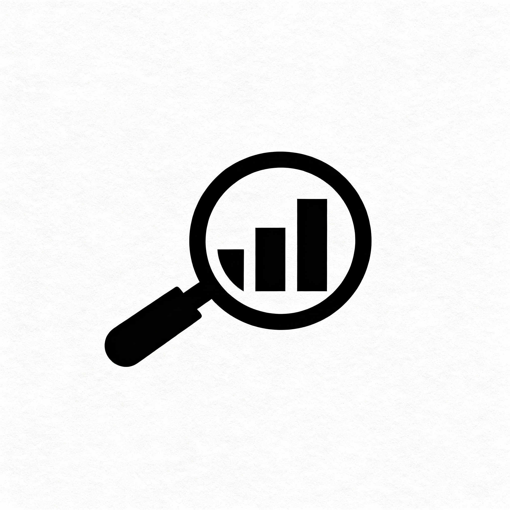
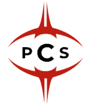
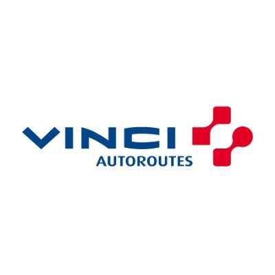
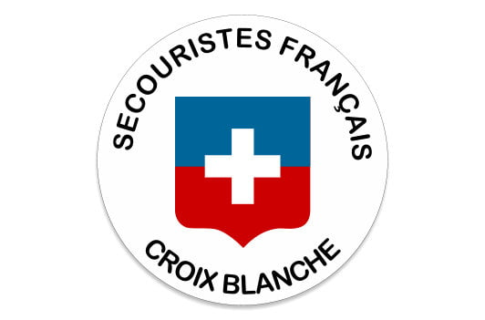
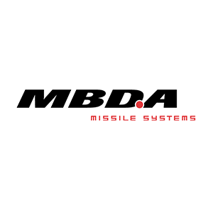
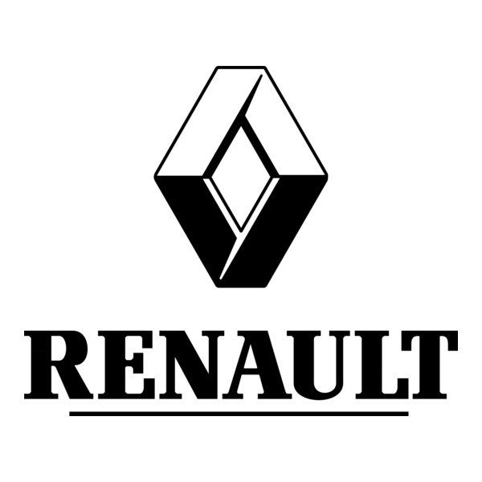

Guillaume Le Page
Data Analyst/PMO

"Bonjour, Je suis Guillaume Le Page. Je cherche un travail."
Download CVPortofolio
Power BI
Python
SQL
Excel

Analyse de films - Ratio Entrées/Budget
Analyse des données du cinéma français avec Python et pandas
Expériences

CHEF DE PROJET MAINTENANCE
Paris2024 — 2024 (6 mois)Mission au sein de l’équipe maintenance des sites olympiques :
- Pilotage et suivi de 35 personnes travaillant sur les sites olympiques
- Management d’une équipe centrale de 4 personnes
- Supervision de la plateforme Safescore (outil de suivi des demandes d’interventions, des rondes de vérifications, des températures des sites)
- Gestion et administration d’un tableau de bord PowerBI utilisant les données de Safescore et reporting quotidien pour les directeurs de sites

DATA ANALYST
Project Conquerors — 2023/2024 (1,5 ans)Mission au sein d’une équipe d’e-sport sur le jeu League of Legends :
- Extraction, nettoyage et analyse de données avec Python (API/Web scraping)
- Création de rapports (Power BI, LookerStudio, Excel)
- Soutien à la prise de décision des coachs

MAITRE D’OUVRAGE
Vinci Autoroutes — 2022/2024 (1,5 ans)Mission au sein de la Direction de la Maitrise d’Ouvrage sur le Duplex de l’A86 :
- Gestion du Programme de Maintien en Conditions Opérationnelles (PMCO - remplacement de 150 000 équipements)
- Suivi du planning, du budget et des réunions pour le PMCO
- Préparation et présentation du comité d’engagement annuel
- Préparation des phases d’études et suivi des travaux

SECOURISTE
La Croix Blance — 2020/2022 (1,5 ans)Mission de prévention COVID à l’aéroport Charles de Gaulle

PROJECT MANAGER OFFICER
MBDA — 2017/2020 (3 ans)Mission sur un projet de développement de missile (MMP/Aster15) :
- Structuration des projets (WBS, CBS, etc.)
- Gestion de la performance des projets (délais, ressources, coûts)
- Préparation et présentation des Prévisions à Fin d’Affaires biannuel

INGENIEUR PROJET JUNIOR
Renault — 2015/2016 (8 mois)Mission sur un projet de développement d’un nouveau véhicule pour Dacia (Duster) :
- Pilotage de l’avancement du projet (Planning et tableau de bord avec KPI)